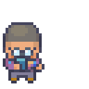

Awake
Last commit under 24 hours. They are at their desk, working.
Momentum Mascot is a retro pixel character who watches your side-project activity and simply feels what is going on. Commit, edit, or mark a project as operating — they respond. Drift and they doze, then sleep. Come back after a long silence and they leap out of bed.
The mascot never dies. It waits.
Awake
It reads two things from each repo: your latest commit and your latest file change. No messages, no diffs, no scores.
Last commit under 24 hours. They are at their desk, working.
24 to 72 hours. Standing away with coffee, getting quiet.
Three days or more. In bed, still holding your place.
A real commit after a sleep. They leap out of bed to celebrate.

A 64×64 desktop pet floats over your workspace as a small ambient signal. Click it to open the room. Drag it to snap it into another corner.
Copy a 1200×630 card to your clipboard. It carries the mood and the room — and deliberately nothing that identifies a project: no names, paths, messages, hashes, or timestamps.
Mark a project as operating and it keeps its place in your list, but the mascot ignores it. No false sleeps while you are doing marketing, content, or planning.
Momentum Mascot.dmg from the latest release.Applications.The app does not start on login yet. After a restart, open it yourself.
~/.keepgoing/mascot/state.json, which you can read or delete.The full privacy policy says the same thing at greater length, and covers where the Mac App Store build keeps its file.
Momentum Mascot is not a productivity tool. It will not score you, streak you, nudge you, or tell you how long it has been since your last commit. It is a small companion for people with demanding day jobs who go through long stretches where nothing gets committed because life is happening.